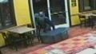
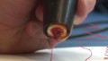
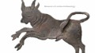

You've selected the U.S. Edition. Would you like to make this your default edition?
Yes
|
No
Close
SET EDITION
: U.S.
INTERNATIONAL
MÉXICO
ARABIC
TV
:
CNN
CNNi
CNN en Español
HLN
Sign up
Log in
Home
TV & Video
CNN Trends
U.S.
World
Politics
Justice
Entertainment
Tech
Health
Living
Travel
Opinion
iReport
Money
Sports
A gunman is holding several Gwinnett County, Georgia, firefighters hostage, a police spokesman said.
updated 6:02 PM EDT, Wed April 10, 2013
Make CNN Your Homepage
North Korea
Gun control
Texas college stabbings
Abducted children
Background checks
Gabby Giffords
Pilot texting
Masters
Tough new words for North Korea
Hagel: They're skating close to dangerous line
Defense Secretary Chuck Hagel says North Korea's actions in recent weeks "have not helped defuse a combustible situation."
FULL STORY
U.S. 'fully prepared' on N. Korea
Map: Missile range
|
Timeline of crisis
Cheney: 'We're in deep doo-doo'
Tokyo asks, how safe are we?
THE LATEST
4 firefighters held hostage in Georgia
Teen kills herself after alleged rape
Compromise on background checks
Head of gun group: I don't buy the polls
Michelle Obama makes emotional plea
Dow, S&P 500 close at record highs
Worst PC sales drop in history
Obama's budget wish list
Police: Hermit emerged to rob 1,000
LIVE:
Arias trial (graphic content)
Live blog from the Arias trial
HLN
Cops: Fugitives spoke of Armageddon
Elephant shot in circus drive-by
Jewish scrolls burned in doorways
Teens reel in 1,000-lb. shark
OPINION
Rand Paul: I'm worried about gun rights
Why NRA hates background checks
The thin line between God and guns
STUFF TO CHEW ON
25 fast and easy ways to get healthier
Teen gang leader grows up
Think 3-D printing is cool? Try 4-D
Apple bans app. More to come?
This is the coldest city on Earth
Time
She thought she won 40K, but it's...
Relic hunter finds 150 y/o war ring
Player says half of NFL uses this drug
IN CASE YOU MISSED IT
Police: 6-year-old shot by playmate dies
Joel Osteen hasn't renounced faith
Conan's version of N. Korean threats
Teen girls lift tractor off dad
Boss wanted dog's nails clipped
MLB ace breaks elbow
Quarterback comes up short as pitcher
'Duck Dynasty' and the crazy uncle
'PARTS UNKNOWN'
Beer and kisses
Eleven things to know before visiting emerging travel hot spot Myanmar.
FULL STORY
More:
Anthony Bourdain: 'Parts Unknown' premieres April 14 at 9 p.m. ET.
WHAT is he about to eat?
Fall in love with the food
READ THIS, WATCH THAT
'Happy' Gilmore defies surfing cliches
Lohan, Letterman in awkward rehab talk
:39
Giffords' wounded life has new purpose
Jodi Arias: Road trip key to killing?
5:17
Where are the McStays? FBI looking

Watch crook push ATM through store
1:23

This pen writes in 3-D
1:24
Found: Oldest known dinosaur embryos
Heart attacks: What you should know
See what man does to save girl
:50

Lost river preserves 'Pompeii of the North'
Quidditch World Cup this weekend
THINGS THAT LAND ON THEIR FEET
10 purr-fect vacations for cat lovers
Watch daredevil 'Flying Raccoona'
1:57
Baby owls fall three stories and then...
1:23
TV & Video
On now
The Situation Room with Wolf Blitzer
6pm ET / 3pm PT
Wolf Blitzer brings you the latest in political news and international events.
Watch TV
Featured TV
Bourdain eats a tea salad
'Parts Unknown' premieres Sunday 9pmET
NFL players to come out?
'AC360' on possibility with former player
Jail for protecting source?
'The Lead' on plight of a journalist
Beyonce & Jay-Z Cuba trip
'AC360' on the controversy around stars
Democrats 'bugged' HQ?
McConnell claim: 'OutFront' has details
CNN finds abducted kids
How it happened: 'AC360' talks Cuba
Amanpour on gun laws
Discussion with Piers Morgan & others
Bourdain's world journey
Goes 'OutFront' with Erin Burnett
'Accidental Racist' song
Jake Tapper explains controversy
Gabby Giffords speaks out
On her recovery & more: 'AC360' 8/10pm
Shows and Schedules
----------------------------------------
Today's schedule
----- CNN Weekdays -----
Erin Burnett OutFront
Anderson Cooper 360
Piers Morgan Live
Early Start
Starting Point
CNN Newsroom
The Situation Room
The Lead with Jake Tapper
----- CNN Weekends -----
Anthony Bourdain Parts Unknown
Sanjay Gupta MD
Your Bottom Line
Your Money
State of the Union
Fareed Zakaria GPS
Reliable Sources
The Next List
----- Other CNN -----
In America
CNN Heroes
CNN Presents
Spec. Investigations Unit
CNN Student News
----- HLN -----
Morning Express with Robin Meade
Raising America
Making it in America
Evening Express
Jane Velez-Mitchell
Nancy Grace
Dr. Drew On Call
What Would You Do?
Showbiz Tonight
Weekend Express with Natasha Curry
Clark Howard
CNN Radio
·
HLN
·
Full Schedule
Weather
Edit location
Go
Atlanta, GA
Current conditions
82
°
Cloudy
Hi
81
°
|
Lo
60
°
Feels like
82
°
Markets
Markets Closed
CNNMoney.com »
Updated
5:16 pm EDT Apr 10
My quotes
Indexes
Dow
14,802.24
(
+
0.88 %)
+
128.78
Nasdaq
3,297.25
(
+
1.83 %)
+
59.39
S&P
1,587.73
(
+
1.22 %)
+
19.12
Get Quotes
U.S.
Suspect's stabbing 'fantasies'
New human missions for NASA
Flag raised for slain DA
FBI hunts for missing family
Mechanic saves customer
World
Auschwitz survivor searching for twin
Are Iran, N. Korea in cahoots?
Woman campaigns in Taliban hotbed
Thatcher, in her own words
Exclusive: 'My brother tried to kill me'
Politics
What's in Obama's budget?
Compromise on background checks
How do background checks work?
Paul: Gov't wants your gun rights
Weiner considering mayoral bid
Around the Web
How to inspect your future neighborhood
Bankrate
Her Tea Party: What Margaret Thatcher Really Meant To England And The World
National Memo
Mercedes Goes to Extremes with Six-Wheeled G63 AMG
Just Luxe
U.S. Taxes vs. Everywhere Else: A Graphic Guide U.S. Taxes vs. Everywhere Else: A Graphic Guide
BusinessWeek
Hypoglycemia - What Is It, Symptoms, Causes
Lifescript.com
Tech
Map apps & driving: against the law?
North Korea website hacked
Smartwatches: Failure, a new hope
Computer + banana = fun
On Twitter, Ebert found new voice
Business
Worst PC sales drop in history
Facebook knows what you buy offline
Microsoft's Apple-beating vision
USPS will keep Saturday delivery
Class of 2013 has grim job prospects
Dow and S&P 500 close at new record highs
Craziest tax deductions
Opinion
Obama budget may bite middle class
Why NRA hates background checks
Government wants your gun rights
Rebels + al Qaeda = trouble
Thatcher let women down
NFL Draft
Matt Miller's latest NFL mock draft
Prospects who'll start in Week 1
Best-kept secrets of 2013 draft
Draft's most versatile prospects
Critical draft for these teams
Experts sleeping on these prospects
Injured prospect talks rehab
Entertainment
Lohan tears up on 'Letterman'
Why so few women in late-night TV?
Rap/country collabs not new
Conan: N. Korea fights with hippo, tiger
You wanna be a Huxtable
Travel
Texting in the cockpit: Don't
Purr-fect spots for cat lovers
World's most colorful cities
Today's photo: Namibia
Bourdain: I'd love to see North Korea
Living
5 ways YOU delay your meal
'Kenyans' leads great running reads
Tomboy style through the years
Raise a glass to Winston Churchill
Clock sells for record $2.3 million
North Korea
Gun
Lone Star College
Margaret Thatcher
Health
Fewer early C-sections
IVF 'co-pioneer' dead at 87
25 easy ways to get healthier
Save yourself after a heart attack
Eat the right kind of carbs
Photography
UCONN women defeat Louisville in NCAA
Teen gang leader grows up
Woman in a 'Mad Men' world
Rattlesnake Roundup: Tex. style
Painting a picture of North Korea
Sports
Tracking NBA Draft declarations
JaMarcus Russell vs. the scale
Player claims half NFL uses this drug
Cold MLB starts that won't last
Golf's top 25 entering the Masters
Report: Jay-Z cashing out of Nets
Matt Miller's NFL Draft big board
HLNtv.com
Prosecutor: Jodi Arias was a stalker
Velez-Mitchell gets interrogated!
Paisley’s new song raises a red flag
Keep your kids' photos safe online
Am I pretty? Ask Instagram
Therapy llamas are the best
Life after being a mascot
Indeed.com Job Search
Search 3 million Jobs on Indeed
Browse Jobs by Company, Title, or Location
Receive Job Alerts by Email
View 124k Insurance Jobs
Find Marketing Jobs
Apply for Health Care Jobs
Employers: Post your jobs on Indeed
TIME.com
Second Amendment Showdown
Nice guys can win at work
What celebs can teach us about death
LEGOLAND hotel opens
The coldest city on Earth
No panic in North Korea
WATCH: Otter pup learns to swim
Play CNN Games!
Play Mahjongg Dimensions!
Play Tri Peaks Solitaire!
Play now: CNN Jigsaw!
82
°
HI 81°
LO 60°
Atlanta, GA
Weather forecast
Home
|
Video
|
CNN Trends
|
U.S.
|
World
|
Politics
|
Justice
|
Entertainment
|
Tech
|
Health
|
Living
|
Travel
|
Opinion
|
iReport
|
Money
|
Sports
Tools & widgets
|
RSS
|
Podcasts
|
Blogs
|
CNN mobile
|
My profile
|
E-mail alerts
|
CNN shop
|
Site map
CNN en ESPAÑOL
|
CNN México
|
CNN Chile
|
CNN Expansión
العربية
|
日本語
|
Türkçe
CNN TV
|
HLN
|
Transcripts
|
© 2013 Cable News Network.
Turner Broadcasting System, Inc.
All Rights Reserved.
Terms of service
|
Privacy guidelines
|
Ad choices
|
Advertise with us
|
About us
|
Contact us
|
Work for us
|
Help